MIO: Multiverse Debugging in the Face of Input/Output
Carmen Torres Lopez, Robbert Gurdeep Singh, Stefan Marr, Elisa Gonzalez Boix, and Christophe Scholliers. Multiverse Debugging: Non-Deterministic Debugging for Non-Deterministic Programs (Brave New Idea Paper). In 33rd European Conference on Object-Oriented Programming (ECOOP 2019).
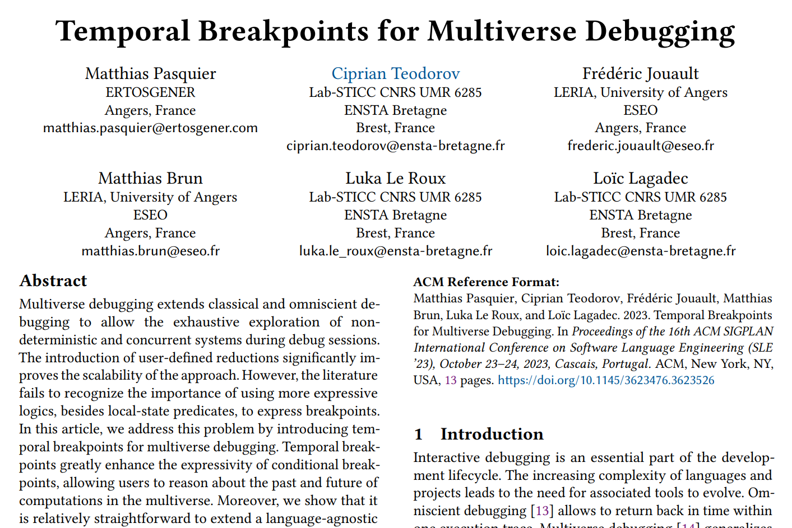
- M
- I
- O
/maː.joː/ a Multiverse debugger for I/O
- M
- I
- O
/maː.joː/ a Multiverse debugger for I/O
Photo by Vishnu Mohanan on Unsplash
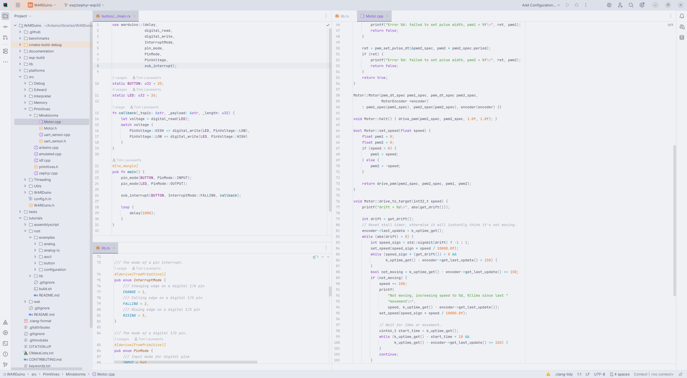
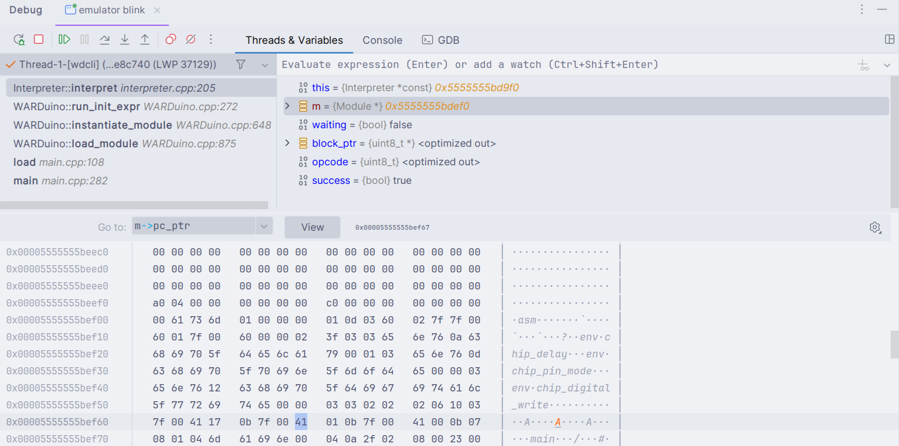

How did we build MIO?
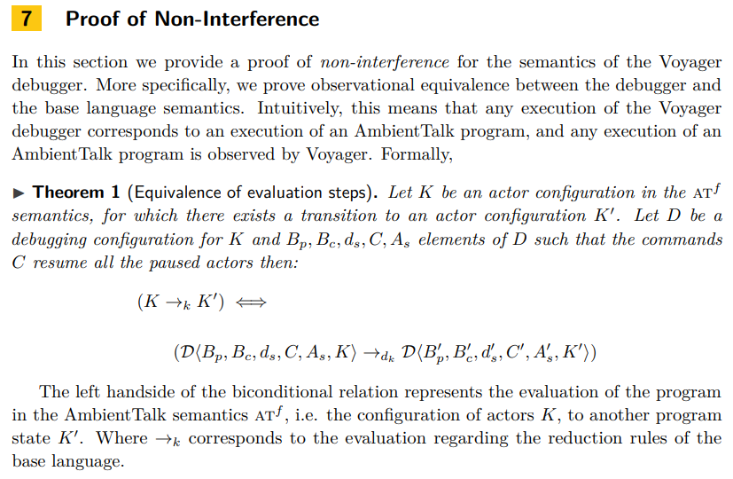
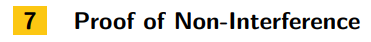
Carmen Torres Lopez, Robbert Gurdeep Singh, Stefan Marr, Elisa Gonzalez Boix, and Christophe Scholliers. Multiverse Debugging: Non-Deterministic Debugging for Non-Deterministic Programs (Brave New Idea Paper). In 33rd European Conference on Object-Oriented Programming (ECOOP 2019).
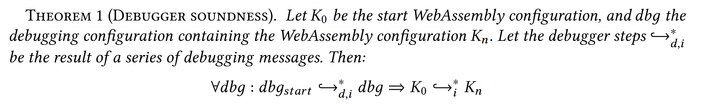

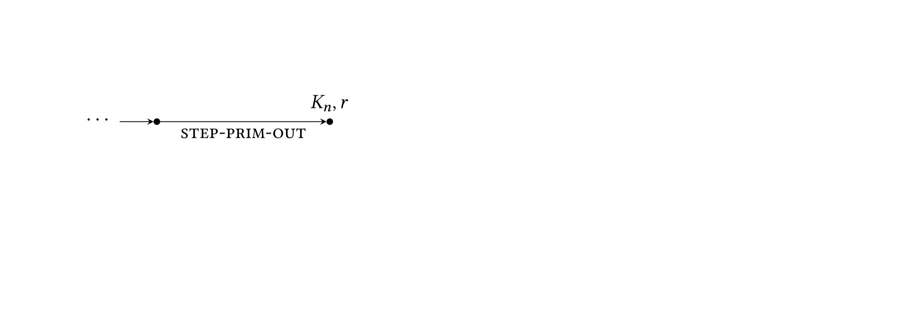
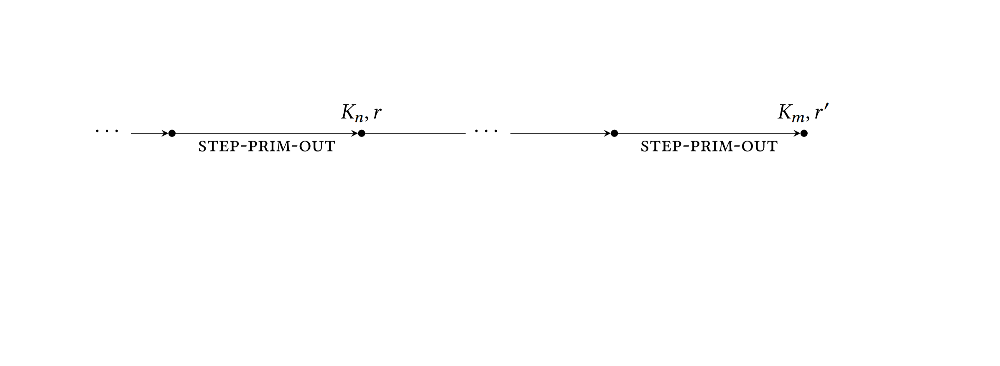
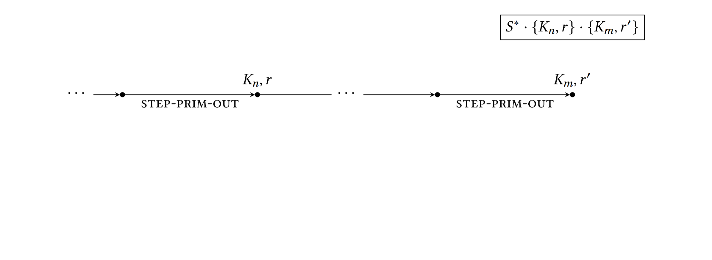
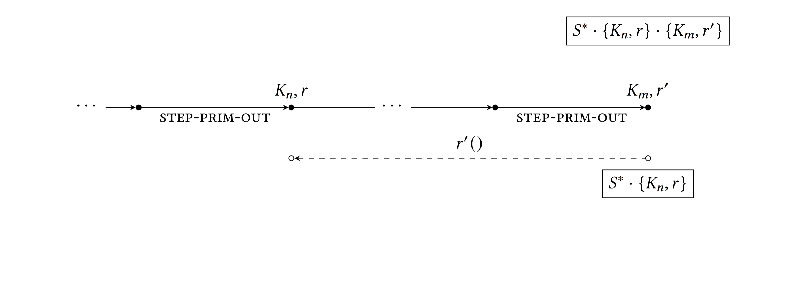
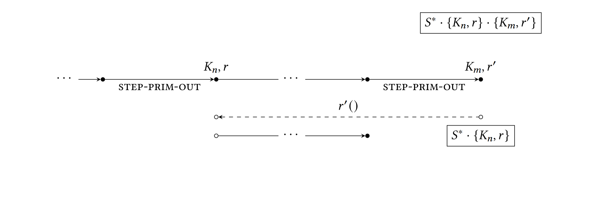
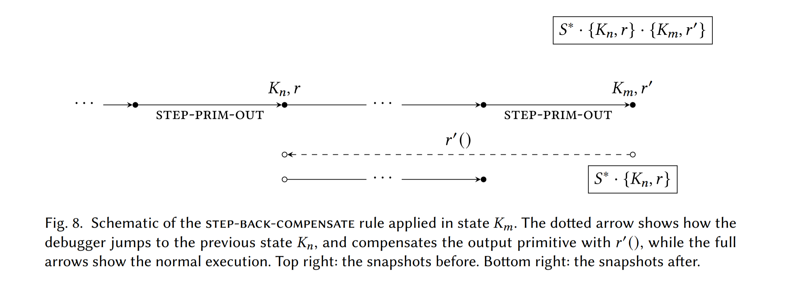
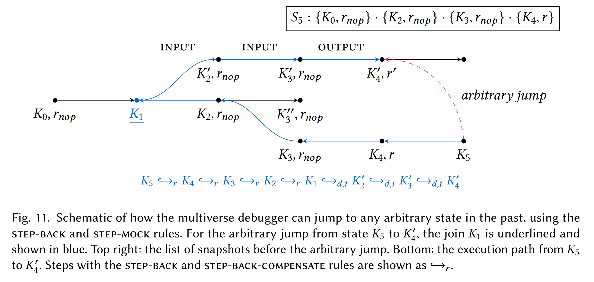
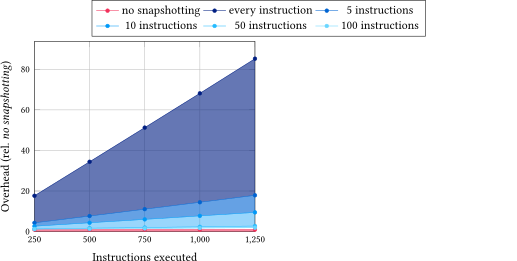
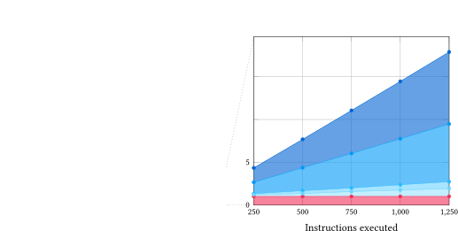